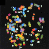
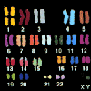

|  |
New Methods for KaryotypingCredits |  |
This web document and all of its content was created by Marcia Underwood, in Grimes and Hallick's lecture section. Denice Warren contributed editorial comments and advice on design and layout. The images are from the article below, and Dr. Grimes has requested permission to publish them on the WWW.
Multicolor Spectral Karyotyping of Human Chromosomes
SCIENCE 26 Jul 1996; 273 (5274):494
(in Reports)
E. Schröck, S. du Manoir, T. Veldman, B. Schoell, J. Wienberg, M. A. Ferguson-Smith, Y. Ning, D. H. Ledbetter, I. Bar-Am, D. Soenksen, Y. Garini, T. Ried
http://biology.arizona.edu
All contents copyright © 1996. All rights reserved.